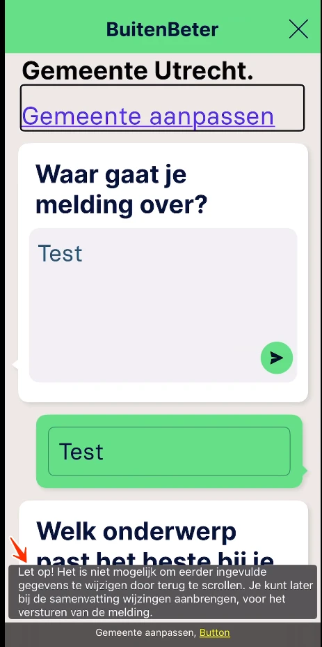
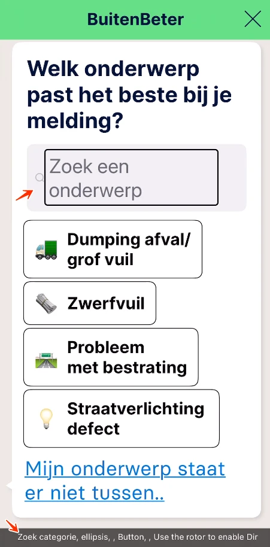

Audit digitale toegankelijkheid van de BuitenBeter iOS-app
Samenvatting
Wij hebben de BuitenBeter iOS-app onderzocht tussen 14 en 28 mei 2026. Op dit moment is een deel van de succescriteria als voldoende beoordeeld. In dit rapport lees je welke punten nog verbetering behoeven en hoe deze kunnen worden aangepakt.
Alle schermen van de BuitenBeter iOS-app uit de steekproef
Buiten scope:
Web views (inhoud die binnen de app via een browser-component wordt getoond)
Ontoegankelijkheden die ontstaan door de manier waarop het device de app rendert, bijvoorbeeld kleurcontrast in alerts of de weergave van sommige knoppen
Inhoud afkomstig van derden
Basisniveau toegankelijkheidsondersteuning
iPhone 12 (iOS-versie 26.3.1)
VoiceOver schermlezer
Extern toetsenbord
Technologieën van de app
iOS (native)
VoiceOver
Voortgang opgeloste bevindingen
Samenwerken met je team
Exporteer alle bevindingen als CSV-bestand. Je kunt het in een (online) spreadsheet inladen om met je team samen te werken.
Importeer in Jira
Exporteer alle bevindingen als Jira-compatibel CSV-bestand. Je kunt het direct importeren via Jira > Issues > Import issues from CSV.
Zelf bijhouden in de browser
Houd per bevinding bij of het is opgelost. Je voortgang wordt opgeslagen in jouw browser. Niemand anders kan je resultaat zien.
0 van
0 opgelost
VoiceOver aanzetten en gebruiken (iOS)
Om de bevindingen in dit rapport zelf te ervaren, test je de app met VoiceOver — de schermlezer die standaard op iedere iPhone en iPad zit. Blinde en slechtziende gebruikers bedienen hun toestel hiermee. Hieronder vind je de stappen om VoiceOver aan te zetten en de gebaren die je nodig hebt.
Tip. Oefen eerst een paar minuten in de Gesture Help: double-tap met vier vingers. In die modus kun je elk gebaar uitproberen zonder dat de app reageert. VoiceOver vertelt je telkens welk gebaar je zojuist hebt gemaakt.
VoiceOver aan- en uitzetten
De snelste manier is een sneltoets instellen. Ga naar Instellingen → Toegankelijkheid → Toegankelijkheidssneltoets en kies VoiceOver. Vanaf dat moment zet je VoiceOver aan of uit door drie keer snel op de zijknop te drukken (op een iPhone X of nieuwer) of op de Home-knop (oudere modellen).
Alternatieven:
Instellingen → Toegankelijkheid → VoiceOver → schakelaar aan of uit.
Vraag Siri: "Hey Siri, zet VoiceOver aan" of "… uit".
De belangrijkste gebaren
Zodra VoiceOver aan staat, werkt je toestel anders dan je gewend bent. Eén keer tikken selecteert alleen een element — je moet double-tappen om iets te activeren. Dit zijn de gebaren die je nodig hebt om door een scherm te bewegen:
Gebaar
Wat het doet
Veeg met één vinger naar rechts
Spring naar het volgende element.
Veeg met één vinger naar links
Spring naar het vorige element.
Double-tap met één vinger
Activeer het element dat VoiceOver heeft geselecteerd (link openen, knop indrukken, vinkje zetten). Je hoeft niet precies op het element te tikken.
Triple-tap met één vinger
Lang indrukken (voor context-menu's en dergelijke).
Veeg met twee vingers omhoog
Lees het hele scherm vanaf het begin voor.
Veeg met twee vingers omlaag
Lees door vanaf het huidige element.
Tik met twee vingers
Pauzeer of hervat de spraak. Handig als je iets wilt opschrijven.
Veeg met drie vingers omhoog of omlaag
Scroll door het scherm.
Tik met vier vingers boven- of onderaan het scherm
Spring naar het eerste of laatste element op het scherm.
De Rotor: springen per type element
De Rotor is het belangrijkste hulpmiddel om snel door een scherm te navigeren. Je kiest eerst op welk type element je wilt springen — bijvoorbeeld alleen de koppen, alleen de knoppen, of alleen de formuliervelden — en beweegt vervolgens van element naar element.
Rotor openen of wisselen: draai twee vingers op het scherm alsof je aan een fysieke draaiknop draait. VoiceOver zegt welke instelling actief is ("Koppen", "Links", "Form controls", …). Draai door tot je de gewenste optie hoort.
Volgende element van dat type: veeg met één vinger omlaag.
Vorige element van dat type: veeg met één vinger omhoog.
Welke opties in de Rotor beschikbaar zijn, stel je in via Instellingen → Toegankelijkheid → VoiceOver → Rotor.
Bevindingen reproduceren
In dit rapport staat bij elke bevinding een "Hoe te reproduceren"-sectie. Daar leggen we uit welke stappen en welke gebaren je moet gebruiken om het probleem zelf te zien. Gebruik deze instructie als naslag: als een stap verwijst naar "de volgende kop", dan weet je dat je de Rotor op Koppen moet zetten en met één vinger omlaag veegt.
Kom je er niet uit? Stuur ons gerust een mail op info@properaccess.nl — we denken graag mee.
Op veel schermen is de focusindicator alleen herkenbaar aan een subtiele kleurverandering van de achtergrond. Het contrast tussen de focus- en niet-focusstaat, of tussen de focusrand en de achtergrond, is lager dan 3:1. Gebruikers met beperkt kleurzicht zien dan niet waar de focus staat. Voorbeelden zijn opties in de header, opties in het menu, de knop "Gemeente aanpassen" op het Home-scherm, alle opties in de stappen van het aanmaken van een melding en andere elementen op andere schermen.
Een voorbeeld: in het menu is de focus blauw op een groene achtergrond. De contrastverhouding is 1,1:1.
User story
Als bezoeker met een visuele beperking zie ik tijdens het navigeren niet welk element actief geselecteerd is. Ik verwacht dat de focusindicator duidelijk afsteekt tegen de achtergrond.
Hoe te testen
Meet het contrast van focusindicators, randen van invoervelden, statussen van selectievakjes en keuzerondjes en informatieve iconen tegen hun achtergrond met de Colour Contrast Analyzer. De ondergrens is 3,0:1. Vergeet grafieksegmenten en linkonderstreping niet.
Oplossing
Geef de focusindicator minimaal 3:1 contrast tegen zowel het focuselement als de omliggende achtergrond. Vertrouw niet alleen op een subtiele kleurverschuiving: combineer kleur met een tweede signaal, bijvoorbeeld een zichtbare omlijning, een onderstreping, een dikkere rand of een gevulde achtergrond. Controleer elke focusstaat (standaard, geselecteerd, uitgeschakeld) in zowel lichte als donkere modus.
Op scherm 2 staat witte tekst op een paarse (#7C62FF) achtergrond. De contrastverhouding is 4,2:1. Normale tekst moet een contrastverhouding hebben van minimaal 4,5:1. Grote tekst (18pt en groter, of 14pt vetgedrukt en groter) moet een contrastverhouding hebben van minimaal 3:1.
User story
Als bezoeker met een visuele beperking kan ik tekst die nauwelijks afsteekt tegen de achtergrond niet ontcijferen. Ik verwacht dat tekst altijd goed leesbaar is tegen de achtergrond.
Hoe te testen
Meet het tekstcontrast op iOS met de Colour Contrast Analyzer aan de hand van een screenshot. De ondergrens is 4,5:1 voor normale tekst en 3,0:1 voor grote tekst. Vergeet placeholders, tekst over afbeeldingen en tab-bar-labels niet.
Oplossing
Pas de tekstkleur, de achtergrondkleur of beide aan, zodat de contrastverhouding aan de minimumeis voldoet. Controleer het resultaat met een contrastchecker en verifieer voor elke staat waarin de tekst voorkomt (standaard, uitgeschakeld, over afbeeldingen, op gekleurde achtergronden) en voor zowel lichte als donkere modus.
Er staat paarse (#7C62FF) tekst "Mijn huidige locatie" op een witte (#FFFEFF) achtergrond. De contrastverhouding is 4,1:1. Normale tekst moet een contrastverhouding hebben van minimaal 4,5:1. Grote tekst (18pt en groter, of 14pt vetgedrukt en groter) moet een contrastverhouding hebben van minimaal 3:1.
User story
Als bezoeker met een visuele beperking kan ik tekst die nauwelijks afsteekt tegen de achtergrond niet ontcijferen. Ik verwacht dat tekst altijd goed leesbaar is tegen de achtergrond.
Hoe te testen
Meet het tekstcontrast op iOS met de Colour Contrast Analyzer aan de hand van een screenshot. De ondergrens is 4,5:1 voor normale tekst en 3,0:1 voor grote tekst. Vergeet placeholders, tekst over afbeeldingen en tab-bar-labels niet.
Oplossing
Pas de tekstkleur, de achtergrondkleur of beide aan, zodat de contrastverhouding aan de minimumeis voldoet. Controleer het resultaat met een contrastchecker en verifieer voor elke staat waarin de tekst voorkomt (standaard, uitgeschakeld, over afbeeldingen, op gekleurde achtergronden) en voor zowel lichte als donkere modus.
Op dit scherm geeft het zoekveld "Zoek een gemeente" geen rol (accessibility trait) door aan hulpsoftware. Schermlezergebruikers horen wel het label van het element, maar niet of het een knop, een link, een selectievakje, een kop of iets anders is. Daardoor kunnen zij niet voorspellen wat er gebeurt als ze het activeren.
User story
Als bezoeker die de app met een schermlezer gebruikt, weet ik bij een element zonder rol niet wat het doet. Ik verwacht dat mijn schermlezer mij vertelt of het een knop, link of ander element is.
Hoe te testen
Test elk interactief element (knop, link, invoer, eigen control) met Accessibility Inspector (iOS) samen met VoiceOver. Elk element moet zichtbaar maken: wat het is (trait of rol, bijvoorbeeld Button, Switch, Header), het label, de huidige status (geselecteerd, uitgeklapt, aangevinkt, uitgeschakeld) en de waarde waar relevant. Gebruik bij voorkeur native UIKit/SwiftUI-controls boven custom views met handmatig ingestelde accessibility traits.
Oplossing
Stel een rol of trait in op elk interactief en structureel element. Op iOS gebruik je accessibilityTraits (bijvoorbeeld .button, .link, .header, .image) of in SwiftUI .accessibilityAddTraits(...).
#5 - Placeholdertekst wordt gebruikt als label voor het zoekveld
Er is een zoekveld met de placeholdertekst "Zoek een gemeente". De placeholdertekst fungeert als label voor het invoerveld. Zodra je gaat typen, verdwijnt de placeholder. Daardoor is voor schermlezergebruikers niet meer duidelijk waar het veld voor dient. Een placeholder kan dus niet als label dienen. Een label moet altijd zichtbaar blijven.
Een mogelijk alternatief is een vergrootglas-icoon bij het zoekveld, maar dat icoon heeft te weinig contrast (zie 1.4.11).
User story
Als gebruiker van een schermlezer in de mobiele app kan ik het doel van het invoerveld niet meer afleiden zodra de placeholdertekst verdwijnt na het typen. Ik verwacht dat het label van het veld altijd beschikbaar blijft.
Hoe te testen
Bekijk elk invoerveld in de app. Elk veld heeft een zichtbaar label of een duidelijke instructie nodig die uitlegt wat er verwacht wordt. Placeholders alleen tellen niet. Controleer of het doel van het veld nog steeds duidelijk wordt aangekondigd door de schermlezer, en of er een zichtbaar label beschikbaar blijft nadat je hebt getypt.
Oplossing
Voeg een permanent zichtbaar label toe naast of boven het invoerveld. De placeholdertekst kan blijven staan als aanvullende hint, maar mag niet het enige label zijn. Placeholdertekst verdwijnt zodra een gebruiker begint te typen, waardoor de functie van het veld niet meer wordt gecommuniceerd. Zorg er ook voor dat de toegankelijke naam de zichtbare tekst van het veld bevat.
Het zoekveld met de placeholdertekst "Zoek een gemeente" heeft een grijs (#8D8D8D) vergrootglas-icoon op een lichtgrijze (#F2EFF4) achtergrond. De contrastverhouding is 2,9:1. Bedieningselementen en betekenisvolle iconen moeten een contrastverhouding van minimaal 3:1 hebben met aangrenzende kleuren, zodat gebruikers met een visuele beperking ze kunnen herkennen en vinden.
Dit is belangrijk omdat het icoon als label fungeert zodra de placeholdertekst verdwijnt bij invoer.
Hetzelfde probleem doet zich voor naast de "x"-knop, en bij andere zoekvelden in de app.
User story
Als bezoeker met een visuele beperking zie ik bij het invullen van een formulier niet waar invoervelden beginnen en eindigen. Ik verwacht dat knoppen en velden duidelijk afsteken tegen de achtergrond.
Hoe te testen
Meet het contrast van focusindicators, randen van invoervelden, statussen van selectievakjes en keuzerondjes en informatieve iconen tegen hun achtergrond met de Colour Contrast Analyzer. De ondergrens is 3,0:1. Vergeet grafieksegmenten en linkonderstreping niet.
Oplossing
Pas de kleur van het element of zijn achtergrond aan, zodat de contrastverhouding minimaal 3:1 is. Doe dit voor elke staat die betekenis draagt (standaard, focus, geselecteerd, aangevinkt) en in zowel lichte als donkere modus. Controleer met een contrastchecker.
#7 - Visuele kop "BuitenBeter" is niet als kop gemarkeerd
Wanneer je op de knop "Mijn huidige locatie" tikt, verschijnt er een melding als je niet in Nederland bent. In die melding ziet de tekst "BuitenBeter" er visueel uit als een kop, maar hij wordt niet als kop doorgegeven aan hulpsoftware. Schermlezergebruikers gebruiken kop-semantiek om de structuur van het scherm te begrijpen en om met de rotor (iOS) tussen secties te springen.
User story
Als bezoeker die de app met een schermlezer gebruikt, navigeer ik door tussen koppen te springen. Sommige visuele koppen zijn onzichtbaar voor mijn schermlezer. Ik verwacht dat alle visuele koppen ook echte koppen zijn voor mijn schermlezer.
Hoe te testen
Loop het scherm door met Accessibility Inspector (iOS) en een schermlezer. Visuele koppen, lijsten, gegroepeerde controls en geselecteerd/uitgeklapt-statussen moeten als trait of rol in de accessibility tree staan, niet alleen als gestileerde tekst. Gebruik de rotor van VoiceOver om te controleren of koppen en lijsten als zodanig worden herkend.
Oplossing
Markeer het element als een kop, zodat hulpsoftware het correct doorgeeft. Op iOS UIKit voeg je .header toe aan accessibilityTraits, in SwiftUI gebruik je .accessibilityAddTraits(.isHeader).
#8 - Statusbericht wordt niet aangekondigd voor schermlezergebruikers
Als je niet in Nederland bent, verschijnt er een melding bij het openen van de app: "De gekozen locatie is buiten Nederland, kies een locatie in Nederland". Dit is een statusbericht, maar het wordt niet aangekondigd door schermlezers. Wanneer informatie op het scherm verandert (een bevestiging, een foutmelding, een laad-indicator) moeten schermlezergebruikers daar een aankondiging van krijgen zonder dat ze focus naar het bericht hoeven te verplaatsen.
Hetzelfde gebeurt bij het invullen van een formulier en terugscrollen. Dan verschijnt een melding: "Let op! Het is niet mogelijk ..."

User story
Als bezoeker die de app met een schermlezer gebruikt, hoor ik geen aankondiging als er een statusbericht op het scherm verschijnt. Ik verwacht dat statusberichten automatisch worden voorgelezen, zonder dat ik er met focus naartoe hoef.
Hoe te testen
Activeer elk statusbericht op het scherm (een succesvolle formulierinvoer, "toegevoegd aan winkelwagen", aantal zoekresultaten, een laad-indicator) met VoiceOver (iOS) ingeschakeld. Elke melding moet aangekondigd worden zonder dat de focus erop springt. Op iOS gebeurt dat doorgaans via UIAccessibility.post(notification: .announcement, ...).
Oplossing
Stuur statuswijzigingen door aan hulpsoftware als live-aankondiging, zonder de focus te verplaatsen. Op iOS post je een UIAccessibility.Notification.announcement, of .layoutChanged of .screenChanged voor grotere wijzigingen.
Als je niet in Nederland bent, verschijnt er een melding bij het openen van de app: "De gekozen locatie is buiten Nederland, kies een locatie in Nederland". Deze belangrijke melding verschijnt kort en verdwijnt daarna. Die korte duur is voor sommige gebruikers niet genoeg om de informatie te lezen en te begrijpen.
Hetzelfde gebeurt bij het invullen van een formulier en terugscrollen. Dan verschijnt een melding: "Let op! Het is niet mogelijk ..."
User story
Als bezoeker lees ik langzamer door een cognitieve beperking, slechtziendheid of dyslexie. Een melding verdwijnt voordat ik klaar ben met lezen. Ik verwacht dat instructie- en waarschuwingsberichten zichtbaar blijven totdat ik ze zelf wegklik.
Hoe te testen
Activeer het tijdelijke instructiebericht in de mobiele app en controleer of gebruikers genoeg tijd hebben om de volledige inhoud te lezen. Controleer of het bericht niet te snel automatisch verdwijnt, of dat gebruikers het kunnen pauzeren, sluiten of opnieuw kunnen oproepen.
Oplossing
Zorg dat tijdelijke instructieberichten lang genoeg zichtbaar blijven om comfortabel te lezen, of bied gebruikers een manier om het bericht te pauzeren, te sluiten of opnieuw op te roepen.
Het zoekveld heeft de placeholdertekst "Zoek een gemeente". Zodra je iets invoert, verschijnt een knop met een "x"-icoon. Deze knop heeft geen toegankelijke naam. De schermlezer kondigt alleen de rol aan (bijvoorbeeld "knop"), maar geeft geen informatie over wat het element is of wat het doet.
User story
Als bezoeker die de app met een schermlezer gebruikt, hoor ik bij een knop of link zonder naam alleen "knop" of "link" zonder context. Ik verwacht dat elk element een duidelijke naam heeft die het doel uitlegt.
Hoe te testen
Test elk interactief element (knop, link, invoer, eigen control) met Accessibility Inspector (iOS) samen met VoiceOver. Elk element moet zichtbaar maken: wat het is (trait of rol, bijvoorbeeld Button, Switch, Header), het label, de huidige status (geselecteerd, uitgeklapt, aangevinkt, uitgeschakeld) en de waarde waar relevant. Gebruik bij voorkeur native UIKit/SwiftUI-controls boven custom views met handmatig ingestelde accessibility traits.
Oplossing
Voeg een toegankelijke naam toe aan elk interactief element. Op iOS stel je accessibilityLabel in, of je gebruikt de zichtbare titel van een standaard control. De naam moet kort beschrijven waar het element voor dient (niet hoe het eruitziet) en moet overeenkomen met het zichtbare label als dat er is. Zo kunnen Voice Control-gebruikers het activeren door de naam uit te spreken.
#11 - Toegankelijke naam bevat niet het zichtbare label
Nadat je een locatie hebt gekozen, verschijnt er een invoerveld onder de kop "Waar gaat je melding over". De toegankelijke naam van dit invoerveld bevat niet de zichtbare tekst. Voice Control-gebruikers, die de zichtbare tekst uitspreken om een control te activeren, kunnen het veld niet aansturen. Schermlezergebruikers horen bovendien een verschil tussen wat ze zien en wat ze horen.
Hetzelfde probleem komt voor bij de knop "Zoek een onderwerp", waar de toegankelijke naam "Zoek categorie" is.

User story
Als bezoeker die de app bedient met spraakinvoer, gebeurt er niets als ik de naam van een invoerveld uitspreek, omdat de onderliggende naam anders is. Ik verwacht dat ik elk invoerveld kan activeren door de tekst uit te spreken die ik op het scherm zie.
Hoe te testen
Vergelijk voor elke control met een zichtbaar tekstlabel de accessibility label via Accessibility Inspector op iOS. De zichtbare tekst moet aan het begin van de accessibility label staan. Test met Voice Control (iOS) door "Tik op [zichtbare tekst]" te zeggen.
Oplossing
Zorg dat de toegankelijke naam de zichtbare tekst bevat, bij voorkeur aan het begin. Idealiter is de toegankelijke naam identiek aan de zichtbare tekst.
#12 - Placeholdertekst wordt gebruikt als label voor het meldingveld
Nadat je een locatie hebt gekozen, verschijnt er een invoerveld onder de kop "Waar gaat je melding over" met de placeholdertekst "Geef hier een zo duidelijke mogelijke ...". De placeholdertekst fungeert als label voor het invoerveld. Zodra je gaat typen, verdwijnt de placeholder, waardoor de functie van het invoerveld onduidelijk wordt voor schermlezergebruikers. Een placeholder kan dus niet als label dienen.
User story
Als bezoeker die de app met een schermlezer gebruikt, kan ik na het typen niet meer afleiden waar het veld voor dient, omdat de placeholdertekst verdwijnt. Ik verwacht dat het veldlabel altijd beschikbaar blijft.
Hoe te testen
Bekijk elk invoerveld in de app. Elk veld heeft een zichtbaar label of een duidelijke instructie nodig die uitlegt wat er verwacht wordt. Placeholders alleen tellen niet. Controleer of het doel van het veld nog steeds duidelijk wordt aangekondigd door de schermlezer en of er een zichtbaar label beschikbaar blijft nadat je hebt getypt.
Oplossing
Voeg een permanent zichtbaar label toe naast of boven het invoerveld. De placeholdertekst kan blijven staan als aanvullende hint, maar mag niet het enige label zijn. Placeholdertekst verdwijnt zodra een gebruiker begint te typen, waardoor de functie van het veld niet meer wordt gecommuniceerd. Zorg er ook voor dat de toegankelijke naam de zichtbare tekst van het veld bevat.
Wanneer je op de knop "Zoek een onderwerp" tikt, opent een dialoogvenster met accordeons. De knoppen die de accordeon-panelen openen, geven geen rol (accessibility trait) door aan hulpsoftware. Schermlezergebruikers horen het label van het element, maar niet of het een knop, link, selectievakje, kop of iets anders is. Daardoor kunnen zij niet voorspellen wat er gebeurt bij het activeren.
User story
Als bezoeker die de app met een schermlezer gebruikt, weet ik bij een element zonder rol niet wat het doet. Ik verwacht dat mijn schermlezer mij vertelt of het een knop, link of ander element is.
Hoe te testen
Test elk interactief element (knop, link, invoer, eigen control) met Accessibility Inspector (iOS) samen met VoiceOver. Elk element moet zichtbaar maken: wat het is (trait of rol, bijvoorbeeld Button, Switch, Header), het label, de huidige status (geselecteerd, uitgeklapt, aangevinkt, uitgeschakeld) en de waarde waar relevant. Gebruik bij voorkeur native UIKit/SwiftUI-controls boven custom views met handmatig ingestelde accessibility traits.
Oplossing
Stel een rol of trait in op elk interactief en structureel element. Op iOS gebruik je accessibilityTraits (bijvoorbeeld .button, .link, .header, .image) of in SwiftUI .accessibilityAddTraits(...).
#14 - Open- of dicht-status van accordeon wordt niet doorgegeven aan hulpsoftware
Wanneer je op de knop "Zoek een onderwerp" tikt, opent een dialoogvenster met accordeons. De visuele pijl-indicator verandert afhankelijk van de status (open of dicht) van het accordeon, maar deze status wordt niet aangekondigd aan schermlezergebruikers. Hierdoor kunnen gebruikers van hulpsoftware niet vaststellen of een sectie uitgeklapt of ingeklapt is.
User story
Als bezoeker die de app met een schermlezer gebruikt, kan ik niet vaststellen of een accordeon uitgeklapt of ingeklapt is, omdat de status niet wordt aangekondigd. Ik verwacht dat de huidige status van het accordeon programmatisch wordt gecommuniceerd.
Hoe te testen
Navigeer door de mobiele app met VoiceOver (iOS) en focus op de accordeon-controls. Controleer of de schermlezer aankondigt of elke accordeon-sectie uitgeklapt of ingeklapt is, en of de status correct meeloopt nadat je een sectie activeert.
Oplossing
Zorg dat accordeon-controls hun open- en dicht-status programmatisch beschikbaar maken, zodat schermlezers de huidige status kunnen aankondigen.
#15 - Visuele kop "Selecteer een item om door te gaan" is niet als kop gemarkeerd
Onder de kop "Wil je een afbeelding toevoegen aan je melding?", als je voor "ja" kiest, verschijnt er een dialoogvenster. In dit dialoogvenster ziet de tekst "Selecteer een item om door te gaan" er visueel uit als een kop, maar hij wordt niet als kop doorgegeven aan hulpsoftware. Schermlezergebruikers gebruiken kop-semantiek om de structuur van het scherm te begrijpen en om met de rotor (iOS) tussen secties te springen.
User story
Als bezoeker die de app met een schermlezer gebruikt, navigeer ik door tussen koppen te springen. Sommige visuele koppen zijn onzichtbaar voor mijn schermlezer. Ik verwacht dat alle visuele koppen ook echte koppen zijn voor mijn schermlezer.
Hoe te testen
Loop het scherm door met Accessibility Inspector (iOS) en een schermlezer. Visuele koppen, lijsten, gegroepeerde controls en geselecteerd/uitgeklapt-statussen moeten als trait of rol in de accessibility tree staan, niet alleen als gestileerde tekst. Gebruik de rotor van VoiceOver om te controleren of koppen en lijsten als zodanig worden herkend.
Oplossing
Markeer het element als een kop, zodat hulpsoftware het correct doorgeeft. Op iOS UIKit voeg je .header toe aan accessibilityTraits, in SwiftUI gebruik je .accessibilityAddTraits(.isHeader).
#16 - Randen van invoervelden hebben minder dan 3:1 contrast
Onder de kop "Wat zijn je contactgegevens?" staat een formulier. De randen van de invoervelden zijn lichtgrijs (#F2EFF4) op een witte (#FFFEFF) achtergrond. De contrastverhouding is 1,1:1. Bedieningselementen moeten een contrastverhouding van minimaal 3:1 hebben tegen achtergrondkleuren.
Een mogelijk alternatief is de placeholdertekst, maar die heeft ook te weinig contrast met de achtergrond (2,5:1).
User story
Als bezoeker met een visuele beperking zie ik bij het invullen van een formulier niet waar invoervelden beginnen en eindigen. Ik verwacht dat de randen van invoervelden duidelijk afsteken tegen de achtergrond.
Hoe te testen
Controleer de contrastverhouding tussen de randen van de invoervelden en de omliggende achtergrond met een contrasttool. Controleer of de invoervelden visueel te onderscheiden zijn en voldoen aan de minimale contrastverhouding van 3:1 voor bedieningselementen.
Oplossing
Pas de kleur van de invoervelden of hun achtergrond aan, zodat de contrastverhouding minimaal 3:1 is. Doe dit voor elke staat die betekenis draagt (standaard, focus, geselecteerd, aangevinkt) en in zowel lichte als donkere modus. Controleer met een contrastchecker.
Onderaan het formulier staat een knop met een witte toggle-switch "Ontvang bevestiging via e-mail" op een grijze achtergrond. De contrastverhouding is 2,6:1. Bedieningselementen moeten een contrastverhouding van minimaal 3:1 hebben tegen achtergrondkleuren.
User story
Als bezoeker met een visuele beperking zie ik bij het invullen van een formulier niet waar invoervelden beginnen en eindigen. Ik verwacht dat de randen van invoervelden duidelijk afsteken tegen de achtergrond.
Hoe te testen
Controleer de contrastverhouding van de toggle-kleuren tegen de achtergrond met een contrasttool. Controleer of de visuele indicatoren van de toggle-status voldoen aan de minimale contrastverhouding van 3:1 voor bedieningselementen.
Oplossing
Pas de kleur van de invoervelden of hun achtergrond aan, zodat de contrastverhouding minimaal 3:1 is. Doe dit voor elke staat die betekenis draagt (standaard, focus, geselecteerd, aangevinkt) en in zowel lichte als donkere modus. Controleer met een contrastchecker.
#18 - Visuele kop "BuitenBeter" in bevestigingsvenster is niet als kop gemarkeerd
Onderaan het formulier staat een toggle-switch "Ontvang bevestiging via e-mail". Wanneer je de switch aanzet en daarna weer uit, verschijnt er een dialoogvenster. In dit dialoogvenster ziet de tekst "BuitenBeter" er visueel uit als een kop, maar hij wordt niet als kop doorgegeven aan hulpsoftware. Schermlezergebruikers gebruiken kop-semantiek om de structuur van het scherm te begrijpen en om met de rotor (iOS) tussen secties te springen.
User story
Als bezoeker die de app met een schermlezer gebruikt, navigeer ik door tussen koppen te springen. Sommige visuele koppen zijn onzichtbaar voor mijn schermlezer. Ik verwacht dat alle visuele koppen ook echte koppen zijn voor mijn schermlezer.
Hoe te testen
Loop het scherm door met Accessibility Inspector (iOS) en een schermlezer. Visuele koppen, lijsten, gegroepeerde controls en geselecteerd/uitgeklapt-statussen moeten als trait of rol in de accessibility tree staan, niet alleen als gestileerde tekst. Gebruik de rotor van VoiceOver om te controleren of koppen en lijsten als zodanig worden herkend.
Oplossing
Markeer het element als een kop, zodat hulpsoftware het correct doorgeeft. Op iOS UIKit voeg je .header toe aan accessibilityTraits, in SwiftUI gebruik je .accessibilityAddTraits(.isHeader).
#19 - Extern toetsenbord kan sommige bedieningselementen niet bereiken of bedienen
Op dit scherm, onder de kop "Wat is de locatie van je melding?", staat een kaart met knoppen. De knoppen met het "?"-icoon en de locatieknop zijn niet bereikbaar met Tab/Shift-Tab, niet te activeren met Space/Enter en niet anderszins te bedienen met een extern toetsenbord. Gebruikers die geen touch kunnen gebruiken en afhankelijk zijn van Full Keyboard Access (iOS) of een extern toetsenbord, kunnen deze functionaliteit niet bereiken.
User story
Als bezoeker die de app met een toetsenbord bedient, kan ik sommige knoppen of links niet bereiken of gebruiken met mijn toetsenbord. Ik verwacht dat ik elk onderdeel van de app kan bedienen met alleen mijn toetsenbord.
Hoe te testen
Loop elk scherm door met Switch Control (iOS), of koppel een Bluetooth-toetsenbord en gebruik Tab, pijltjestoetsen en Enter. Elke control, elk formulierveld en elke custom component moet bereikbaar en bedienbaar zijn zonder touch. Let extra op interacties die alleen via drag werken, swipe-to-delete en custom gestures: die hebben een alternatief met een enkele actie nodig.
Oplossing
Zorg dat elk interactief element met het toetsenbord bereikbaar en bedienbaar is. Op iOS implementeer je Full Keyboard Access: standaard UIKit/SwiftUI-controls werken meteen; voor custom controls implementeer je UIFocusEnvironment en handel je key commands af (UIKeyCommand). Test elk scherm met een aangesloten extern toetsenbord en zonder touch.
#20 - Annuleren in afbeeldingsdialoog stopt het hele meldingsproces
Impact: AdviesType: Techniek
Onder de kop "Wil je een afbeelding toevoegen aan je melding?" verschijnt een dialoogvenster wanneer je "Ja" kiest. Als je in dit dialoogvenster op "Annuleren" tikt, kun je de melding niet verder afmaken.
Een annuleeractie wordt doorgaans gebruikt om het dialoogvenster te sluiten of de huidige stap af te breken, zonder dat het hele proces stopt. Dit gedrag kan verwarrend zijn en kan de gebruiker per ongeluk uit het proces halen.
Hoe te testen
Als gebruiker wil ik het dialoogvenster voor het uploaden van een afbeelding kunnen annuleren zonder dat de rest van het proces stopt, zodat ik mijn melding kan blijven indienen, ook als ik besluit geen afbeelding toe te voegen.
Oplossing
Zorg dat "Annuleren" alleen het dialoogvenster sluit of de upload-actie afbreekt, zodat gebruikers de melding verder kunnen afmaken.
In het tabblad "Mijn meldingen" zijn er "meldingen" die als knop fungeren, maar geen toegankelijke naam hebben. De schermlezer kondigt alleen de rol aan (bijvoorbeeld "knop"), maar geeft geen informatie over wat de elementen zijn of wat ze doen.
User story
Als bezoeker die de app met een schermlezer gebruikt, hoor ik bij een knop of link zonder naam alleen "knop" of "link" zonder context. Ik verwacht dat elk element een duidelijke naam heeft die het doel uitlegt.
Hoe te testen
Test elk interactief element (knop, link, invoer, eigen control) met Accessibility Inspector (iOS) samen met VoiceOver. Elk element moet zichtbaar maken: wat het is (trait of rol, bijvoorbeeld Button, Switch, Header), het label, de huidige status (geselecteerd, uitgeklapt, aangevinkt, uitgeschakeld) en de waarde waar relevant. Gebruik bij voorkeur native UIKit/SwiftUI-controls boven custom views met handmatig ingestelde accessibility traits.
Oplossing
Voeg een toegankelijke naam toe aan elk interactief element. Op iOS stel je accessibilityLabel in, of je gebruikt de zichtbare titel van een standaard control. De naam moet kort beschrijven waar het element voor dient (niet hoe het eruitziet) en moet overeenkomen met het zichtbare label als dat er is. Zo kunnen Voice Control-gebruikers het activeren door de naam uit te spreken.
Op dit scherm staat de zichtbare kop "Mijn gegevens", maar VoiceOver kondigt deze alleen aan als "kop". De koptekst wordt niet doorgegeven aan hulpsoftware. Hierdoor weten schermlezergebruikers niet waar de sectie onder de kop over gaat.
User story
Als bezoeker die de app met een schermlezer gebruikt, hoor ik bij een knop of kop zonder naam alleen "knop" of "kop" zonder context. Ik verwacht dat elk element een duidelijke naam heeft die het doel uitlegt.
Hoe te testen
Test elk interactief element (knop, link, invoer, eigen control) met Accessibility Inspector (iOS) samen met VoiceOver. Elk element moet zichtbaar maken: wat het is (trait of rol, bijvoorbeeld Button, Switch, Header), het label, de huidige status (geselecteerd, uitgeklapt, aangevinkt, uitgeschakeld) en de waarde waar relevant. Gebruik bij voorkeur native UIKit/SwiftUI-controls boven custom views met handmatig ingestelde accessibility traits.
Oplossing
Zorg dat de zichtbare koptekst programmatisch gekoppeld is aan het kop-element en wordt doorgegeven aan hulpsoftware. VoiceOver moet zowel de koptekst als de rol aankondigen (bijvoorbeeld "Mijn gegevens, kop"), niet alleen de rol. De naam moet overeenkomen met het zichtbare label, zodat Voice Control-gebruikers het kunnen activeren door de naam uit te spreken.
#23 - Tekstcontrast van formulierlabels is te laag
Op dit scherm zijn de labels van de invoervelden, bijvoorbeeld "NAAM" en "E-MAILADRES", grijs (#6F6B78) op een lichtgele (#EEE8E5) achtergrond. De contrastverhouding is 4,3:1. Normale tekst moet een contrastverhouding hebben van minimaal 4,5:1. Grote tekst (18pt en groter, of 14pt vetgedrukt en groter) moet een contrastverhouding hebben van minimaal 3:1.
User story
Als bezoeker met een visuele beperking kan ik tekst die nauwelijks afsteekt tegen de achtergrond niet ontcijferen. Ik verwacht dat tekst altijd goed leesbaar is tegen de achtergrond.
Hoe te testen
Meet het tekstcontrast op iOS met de Colour Contrast Analyzer aan de hand van een screenshot. De ondergrens is 4,5:1 voor normale tekst en 3,0:1 voor grote tekst. Vergeet placeholders, tekst over afbeeldingen en tab-bar-labels niet.
Oplossing
Pas de tekstkleur, de achtergrondkleur of beide aan, zodat de contrastverhouding aan de minimumeis voldoet. Controleer het resultaat met een contrastchecker en verifieer voor elke staat waarin de tekst voorkomt (standaard, uitgeschakeld, over afbeeldingen, op gekleurde achtergronden) en voor zowel lichte als donkere modus.
#24 - Randen van invoervelden hebben minder dan 3:1 contrast
Op dit scherm zijn de randen van de invoervelden grijs (#9A97A) op een lichtgele (#EEE8E5) achtergrond. De contrastverhouding is 2,4:1. Bedieningselementen moeten een contrastverhouding van minimaal 3:1 hebben tegen achtergrondkleuren.
User story
Als bezoeker met een visuele beperking zie ik bij het invullen van een formulier niet waar invoervelden beginnen en eindigen. Ik verwacht dat de randen van invoervelden duidelijk afsteken tegen de achtergrond.
Hoe te testen
Controleer de contrastverhouding tussen de randen van de invoervelden en de omliggende achtergrond met een contrasttool. Controleer of de invoervelden visueel te onderscheiden zijn en voldoen aan de minimale contrastverhouding van 3:1 voor bedieningselementen.
Oplossing
Pas de kleur van de invoervelden of hun achtergrond aan, zodat de contrastverhouding minimaal 3:1 is. Doe dit voor elke staat die betekenis draagt (standaard, focus, geselecteerd, aangevinkt) en in zowel lichte als donkere modus. Controleer met een contrastchecker.
Wanneer je op de knop "TAAL" tikt, opent een modal dialoogvenster. In dit venster ziet de tekst "Wijzig taal" er visueel uit als een kop, maar hij wordt niet als kop doorgegeven aan hulpsoftware. Schermlezergebruikers gebruiken kop-semantiek om de structuur van het scherm te begrijpen en om met de rotor (iOS) tussen secties te springen.
User story
Als bezoeker die de app met een schermlezer gebruikt, navigeer ik door tussen koppen te springen. Sommige visuele koppen zijn onzichtbaar voor mijn schermlezer. Ik verwacht dat alle visuele koppen ook echte koppen zijn voor mijn schermlezer.
Hoe te testen
Loop het scherm door met Accessibility Inspector (iOS) en een schermlezer. Visuele koppen, lijsten, gegroepeerde controls en geselecteerd/uitgeklapt-statussen moeten als trait of rol in de accessibility tree staan, niet alleen als gestileerde tekst. Gebruik de rotor van VoiceOver om te controleren of koppen en lijsten als zodanig worden herkend.
Oplossing
Markeer het element als een kop, zodat hulpsoftware het correct doorgeeft. Op iOS UIKit voeg je .header toe aan accessibilityTraits, in SwiftUI gebruik je .accessibilityAddTraits(.isHeader).
#26 - Toggle-knoppen hebben minder dan 3:1 contrast
Er zijn twee toggle-knoppen: "App notifications" en "Email notifications". Als deze knoppen aanstaan, zijn ze wit (#FFFEFF) op een groene (#65DF87) achtergrond. De contrastverhouding is 1,7:1. Als ze uitstaan, zijn ze wit (#FFFEFF) op een grijze (#9D9CBD) achtergrond. De contrastverhouding is 2,6:1. Bedieningselementen moeten een contrastverhouding van minimaal 3:1 hebben tegen achtergrondkleuren.
User story
Als bezoeker met een visuele beperking zie ik bij het invullen van een formulier niet waar invoervelden beginnen en eindigen. Ik verwacht dat de randen van invoervelden duidelijk afsteken tegen de achtergrond.
Hoe te testen
Controleer de contrastverhouding van de toggle-kleuren tegen de achtergrond met een contrasttool. Controleer of de visuele indicatoren van de toggle-status voldoen aan de minimale contrastverhouding van 3:1 voor bedieningselementen.
Oplossing
Pas de kleur van de invoervelden of hun achtergrond aan, zodat de contrastverhouding minimaal 3:1 is. Doe dit voor elke staat die betekenis draagt (standaard, focus, geselecteerd, aangevinkt) en in zowel lichte als donkere modus. Controleer met een contrastchecker.
Sommige koppen zijn niet als kop gemarkeerd, bijvoorbeeld "What data do we process?", "Why do we collect this information?" en andere. Deze teksten zien er visueel uit als koppen, maar worden niet als kop doorgegeven aan hulpsoftware. Schermlezergebruikers gebruiken kop-semantiek om de structuur van het scherm te begrijpen en om met de rotor (iOS) tussen secties te springen.
User story
Als bezoeker die de app met een schermlezer gebruikt, navigeer ik door tussen koppen te springen. Sommige visuele koppen zijn onzichtbaar voor mijn schermlezer. Ik verwacht dat alle visuele koppen ook echte koppen zijn voor mijn schermlezer.
Hoe te testen
Loop het scherm door met Accessibility Inspector (iOS) en een schermlezer. Visuele koppen, lijsten, gegroepeerde controls en geselecteerd/uitgeklapt-statussen moeten als trait of rol in de accessibility tree staan, niet alleen als gestileerde tekst. Gebruik de rotor van VoiceOver om te controleren of koppen en lijsten als zodanig worden herkend.
Oplossing
Markeer het element als een kop, zodat hulpsoftware het correct doorgeeft. Op iOS UIKit voeg je .header toe aan accessibilityTraits, in SwiftUI gebruik je .accessibilityAddTraits(.isHeader).
#28 - Items zijn visueel een lijst, maar zijn niet als lijst gemarkeerd
Op dit scherm staat een lijst met 4 items die visueel als lijst gepresenteerd worden, maar niet als lijst worden doorgegeven aan hulpsoftware. Schermlezergebruikers horen niet dat de items bij elkaar horen, hoeveel items er zijn of bij welk item ze zijn.
User story
Als bezoeker die de app met een schermlezer gebruikt, hoor ik bij een groep items niet hoeveel er zijn of waar de groep begint en eindigt. Ik verwacht dat mijn schermlezer aankondigt dat het een lijst is en hoeveel items er in zitten.
Hoe te testen
Loop het scherm door met Accessibility Inspector (iOS) en een schermlezer. Visuele koppen, lijsten, gegroepeerde controls en geselecteerd/uitgeklapt-statussen moeten als trait of rol in de accessibility tree staan, niet alleen als gestileerde tekst. Gebruik de rotor van VoiceOver om te controleren of koppen en lijsten als zodanig worden herkend.
Oplossing
Groepeer lijst-items met de juiste lijst-semantiek. Op iOS gebruik je bij voorkeur UICollectionView of UITableView, die de lijst-semantiek automatisch doorgeven. Voor custom containers stel je accessibilityContainerType = .list in.
#29 - Links zijn niet bereikbaar met een extern toetsenbord
Op dit scherm zijn links, zoals "https://buitenbeter.nl" en andere, niet bereikbaar met Tab/Shift-Tab, niet te activeren met Space/Enter en niet anderszins te bedienen met een extern toetsenbord. Gebruikers die geen touch kunnen gebruiken en afhankelijk zijn van Full Keyboard Access (iOS) of een extern toetsenbord, kunnen deze functionaliteit niet bereiken.
User story
Als bezoeker die de app met een toetsenbord bedient, kan ik sommige knoppen of links niet bereiken of gebruiken met mijn toetsenbord. Ik verwacht dat ik elk onderdeel van de app kan bedienen met alleen mijn toetsenbord.
Hoe te testen
Loop elk scherm door met Switch Control (iOS), of koppel een Bluetooth-toetsenbord en gebruik Tab, pijltjestoetsen en Enter. Elke control, elk formulierveld en elke custom component moet bereikbaar en bedienbaar zijn zonder touch. Let extra op interacties die alleen via drag werken, swipe-to-delete en custom gestures: die hebben een alternatief met een enkele actie nodig.
Oplossing
Zorg dat elk interactief element met het toetsenbord bereikbaar en bedienbaar is. Op iOS implementeer je Full Keyboard Access: standaard UIKit/SwiftUI-controls werken meteen; voor custom controls implementeer je UIFocusEnvironment en handel je key commands af (UIKeyCommand). Test elk scherm met een aangesloten extern toetsenbord en zonder touch.
Op dit scherm heeft de knop het zichtbare label "Mijn meldingen", maar de toegankelijke naam "Ga terug naar het vorige scherm" bevat die zichtbare tekst niet. Voice Control-gebruikers, die de zichtbare tekst uitspreken om een control te activeren, kunnen de knop niet aansturen. Schermlezergebruikers horen bovendien een verschil tussen wat ze zien en wat ze horen.
User story
Als bezoeker die de app bedient met spraakinvoer, gebeurt er niets als ik de naam van een knop uitspreek, omdat de onderliggende naam anders is. Ik verwacht dat ik elke knop kan activeren door de tekst uit te spreken die ik op het scherm zie.
Hoe te testen
Vergelijk voor elke control met een zichtbaar tekstlabel de accessibility label via Accessibility Inspector op iOS. De zichtbare tekst moet aan het begin van de accessibility label staan. Test met Voice Control (iOS) door "Tik op [zichtbare tekst]" te zeggen.
Oplossing
Zorg dat de toegankelijke naam van elke control het zichtbare label bevat, in dezelfde woordvolgorde. Op iOS begin je de accessibilityLabel met de zichtbare tekst ("Mijn meldingen, ga terug naar het vorige scherm" voor de "Mijn meldingen"-knop met een "Ga terug naar het vorige scherm" hint). In SwiftUI gebruik je bij voorkeur Button("Mijn meldingen") { ... } boven custom labels. Heb je extra context nodig voor schermlezers, plak die dan achter het zichtbare label, nooit ervoor.
#31 - Visuele kop "Afval" is niet als kop gemarkeerd
Op dit scherm ziet de tekst "Afval" er visueel uit als een kop, maar hij wordt niet als kop doorgegeven aan hulpsoftware. Schermlezergebruikers gebruiken kop-semantiek om de structuur van het scherm te begrijpen en om met de rotor (iOS) tussen secties te springen.
User story
Als bezoeker die de app met een schermlezer gebruikt, navigeer ik door tussen koppen te springen. Sommige visuele koppen zijn onzichtbaar voor mijn schermlezer. Ik verwacht dat alle visuele koppen ook echte koppen zijn voor mijn schermlezer.
Hoe te testen
Loop het scherm door met Accessibility Inspector (iOS) en een schermlezer. Visuele koppen, lijsten, gegroepeerde controls en geselecteerd/uitgeklapt-statussen moeten als trait of rol in de accessibility tree staan, niet alleen als gestileerde tekst. Gebruik de rotor van VoiceOver om te controleren of koppen en lijsten als zodanig worden herkend.
Oplossing
Markeer het element als een kop, zodat hulpsoftware het correct doorgeeft. Op iOS UIKit voeg je .header toe aan accessibilityTraits, in SwiftUI gebruik je .accessibilityAddTraits(.isHeader).
Over dit onderzoek
Leeswijzer
Onze rapporten zijn anders. Bij het bespreken van de gevonden problemen volgen wij niet de structuur van de norm, maar die van jouw website of app. Hierdoor kun je gewoon per pagina of scherm aan de slag gaan. Wel zo makkelijk! Je vindt verderop een overzicht van alle pagina’s met problemen.
We geven je bij elk gevonden issue een paar voorbeelden, maar niet een complete lijst. Controleer zelf of het probleem ook nog op andere plekken voorkomt. Zie het rapport als een leidraad.
Gebruikte norm
Dit onderzoek laat zien in hoeverre de app op dit moment voldoet aan WCAG 2.1, niveau A en AA. WCAG staat voor Web Content Accessibility Guidelines. Dit is de internationale norm voor digitale toegankelijkheid. De Europese norm EN 301 549 bevat alle eisen van WCAG op niveau A en AA.
In dit rapport hebben we korte beschrijvingen van de succescriteria uit de norm opgenomen, met een algemene uitleg erbij. Wil je ze helemaal lezen? Bekijk dan de documentatie van WCAG.
Gebruikte onderzoeksmethode
We gebruiken de onderzoeksmethode WCAG-EM van het W3C. Het proces ziet er als volgt uit:
vaststellen wat binnen en buiten scope valt
vaststellen welke technologieën zijn gebruikt
steekproef (sample) samenstellen
steekproef onderzoeken
gevonden issues beschrijven
Het grootste deel van het onderzoek doen we met de hand. Voor een deel van de toegankelijkheidseisen gebruiken we automatische tools als ondersteuning, zoals axe-core en Chrome Developer Tools.
Belangrijk om te weten
Dit rapport helpt je om de toegankelijkheid van je app te verbeteren. Maar let op: het is geen definitieve, volledige lijst van alle aanwezige toegankelijkheidsproblemen. Dat zit zo:
Het is een steekproef
Ten eerste is het onderzoek gebaseerd op een steekproef. Die is op een betrouwbare manier genomen, en de meeste problemen zullen daardoor zeker aan het licht komen. Toch kan een probleem net buiten de steekproef vallen. Bij een volgend onderzoek kan het wel ontdekt worden.
Op basis van falsificatie
We beoordelen vanuit het principe van falsificatie. Dat houdt in dat we proberen te bewijzen dat iets niet waar is, in plaats van te bevestigen dat het klopt. ‘Voldoet’ betekent daarom dat we geen reden hebben gevonden om een punt af te keuren. Maar als we later wél een reden vinden, kan het alsnog worden afgekeurd.
Voortschrijdend inzicht
Het komt voor dat de beoordeling van een succescriterium op detailniveau verandert. De norm beschrijft namelijk niet élk mogelijk scenario. Samen met andere onderzoeksbureaus overleggen we hoe we met bepaalde situaties omgaan. Zo kan iets dat nu wordt afgekeurd, soms bij een volgend onderzoek worden goedgekeurd en andersom.
Oplossen leidt tot nieuw probleem
Ten slotte kan het gebeuren dat bij het oplossen van een probleem onbedoeld een nieuw toegankelijkheidsprobleem ontstaat. Dat komt dan bij een volgend onderzoek pas naar voren.
Hoe werkt dit rapport?
Bevindingen bekijken en filteren
Alle gevonden toegankelijkheidsproblemen staan onder Gevonden problemen. Je kunt de bevindingen filteren op:
Impact (Groot, Medium, Klein, Advies) — hoe ernstig is het probleem voor de gebruiker?
Type (Content, Techniek) — moet de inhoud of de techniek worden aangepast?
Status (Open, Opgelost) — welke problemen zijn al verholpen?
Voortgang bijhouden
Je kunt je voortgang op twee manieren bijhouden:
CSV-export — exporteer alle bevindingen als CSV-bestand en laad het in een (online) spreadsheet om met je team samen te werken.
Jira-export — exporteer alle bevindingen als Jira-compatibel CSV-bestand. Importeer het via Jira > Issues > Import issues from CSV. Bevindingen worden aangemaakt als bugs met prioriteit op basis van impact.
Registreer in de browser — activeer deze optie om per bevinding bij te houden of het is opgelost. Je voortgang wordt opgeslagen in je browser. Niemand anders kan je resultaat zien. Let op: de voortgang is gekoppeld aan je browser. Als je een andere browser of een ander apparaat gebruikt, begint de telling opnieuw.
Plan van aanpak — download een geprioriteerd plan van aanpak om de gevonden problemen stap voor stap op te lossen. Dit is beschikbaar bij audits vanaf maart 2026.
Link naar een specifieke bevinding delen
Bij elke bevinding verschijnt een link-icoon wanneer je er met de muis overheen gaat. Klik op dit icoon om de directe link naar die bevinding te kopiëren. Je kunt deze link plakken in een e-mail of chatbericht, bijvoorbeeld om een vraag te stellen aan Proper Access over een specifiek punt.